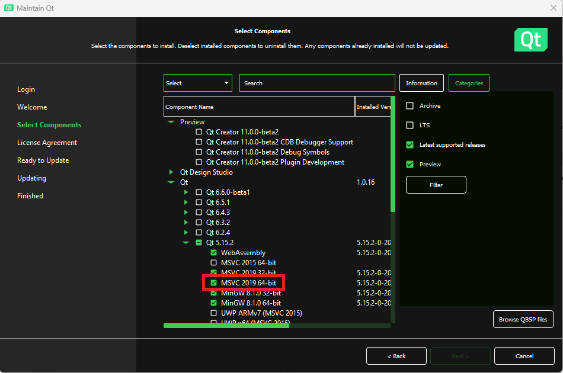
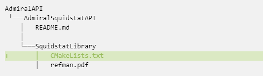
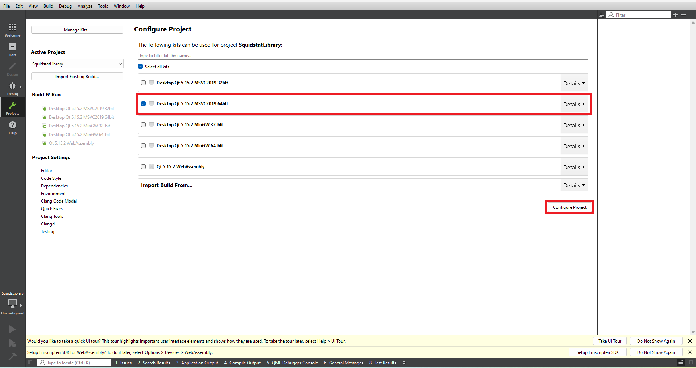
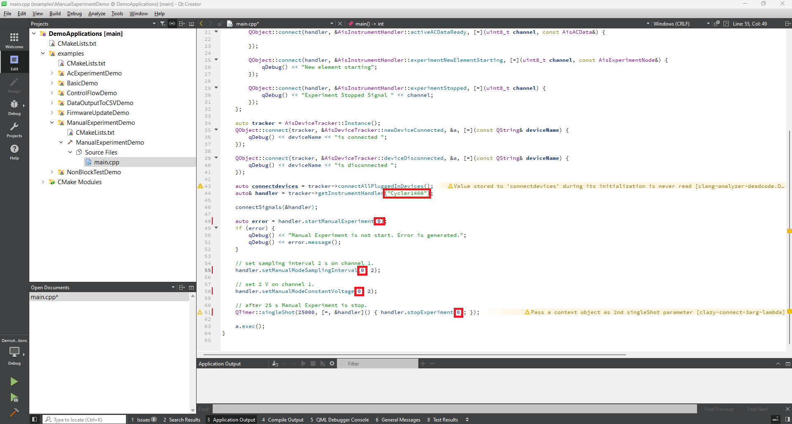
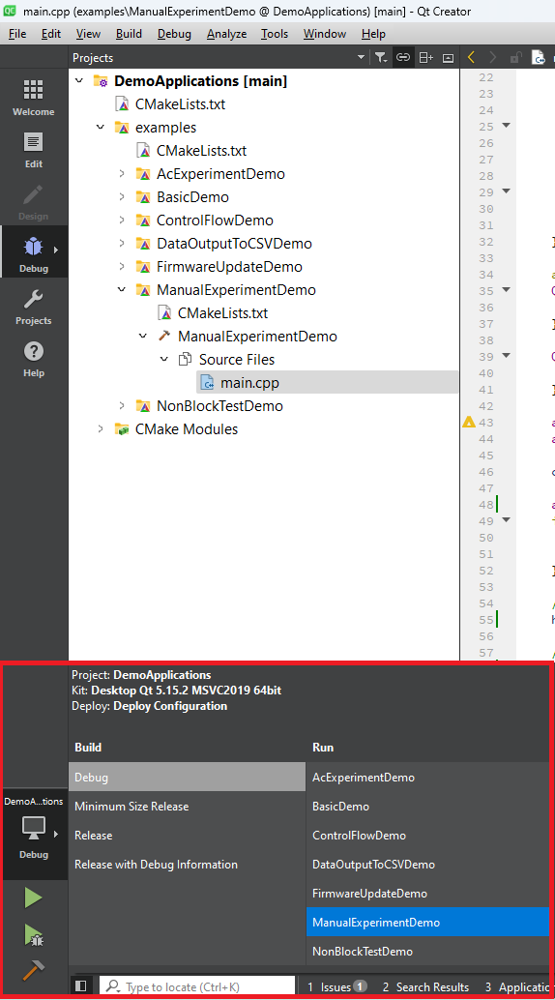
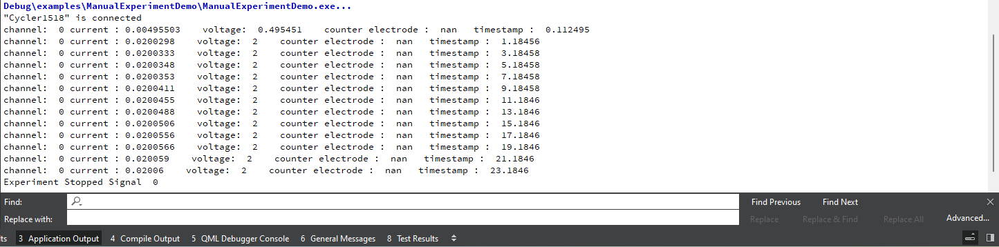

|
Squidstat API User Manual
|
|
Squidstat API User Manual
|
If Git is installed correctly, you should see the version information displayed as a result.
AdmiralAPI, it is recommended to choose a name without spaces.AdmiralAPI, and open the command prompt. git clone https://github.com/Admiral-Instruments/AdmiralSquidstatAPI
The result in the command prompt will look like this:
If you check in your directory, you will find a new directory named "AdmiralSquidstatAPI" which contains the Admiral Instruments API.

During the installation process, please ensure that you add at least one of the following components: MSVC2019 64-bit or any MSVC**** 64-bit kit.

MaintenanceTool.exe. From there, you can install the MSVC 64-bit kit by selecting the "Add or remove components" option. However, new Qt users can skip this step.File tab. Within the File tab, choose the Open File or Project option.Select the CMakeLists.txt file located inside the AdmiralSquidstatAPI > SquidstatLibrary directory.

Once you open the Qt CMakeLists.txt in Qt, it will provide you with the option to select the kit. Choose the MSVC 64-bit kit and click on "Configure Project."

The project solution will look like the image below.

You can select any example from the list. For the purpose of this tutorial, select the "ManualexperimentDemo" project and open the main.cpp file. You are required to change the deviceName and channel number.

Select either Debug or Release mode according to your requirements and click on the run button to execute the manualExperimentDemo.

You can view the output data from the manual experiment in the Application Output window.
